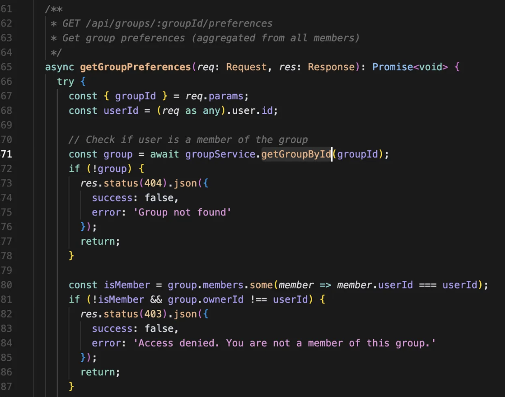
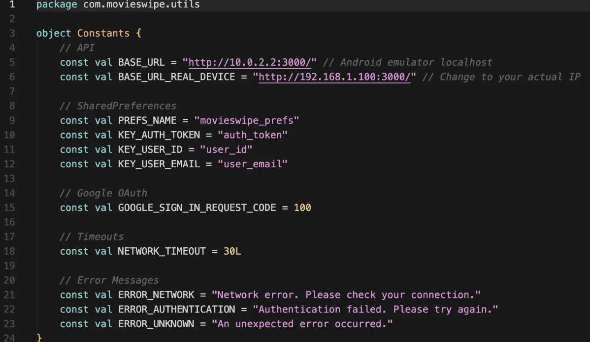
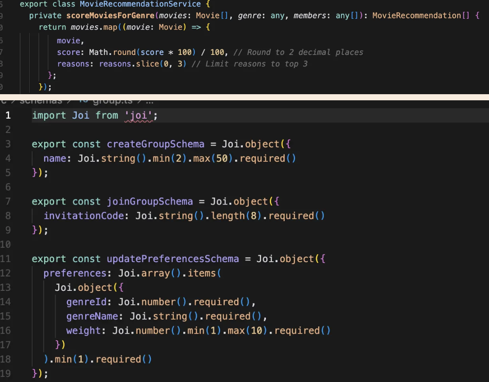
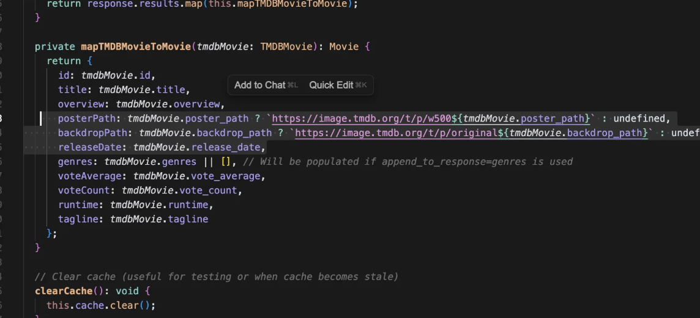
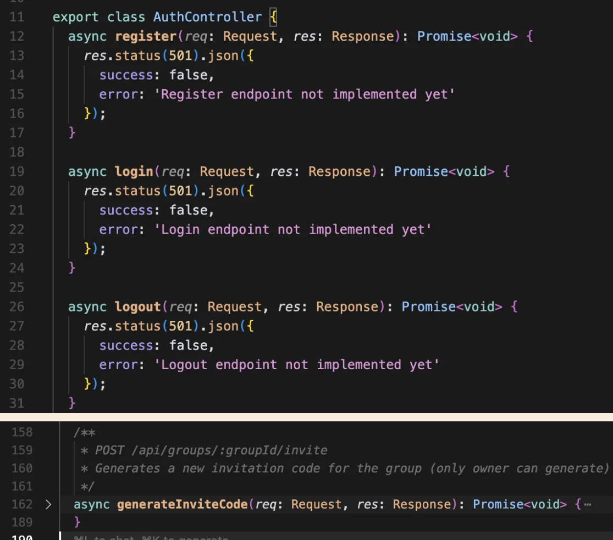
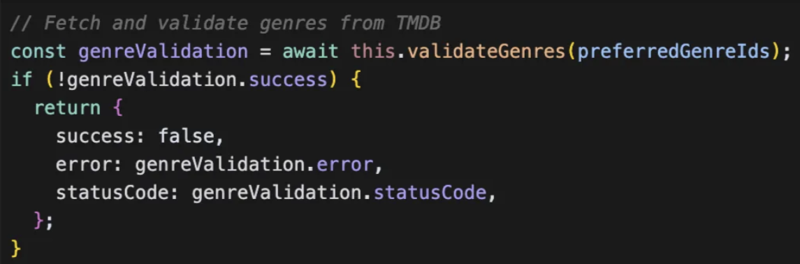
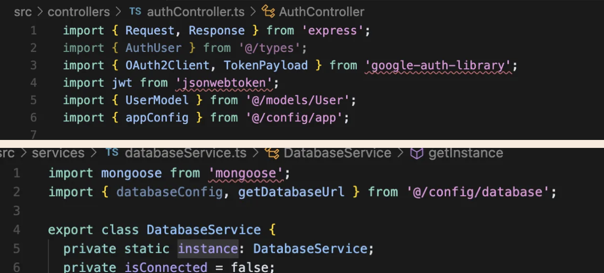

Expert Developer 1: Scenario 3 Observational Notes
This scenario evaluates the code generation by-feature with formal specifications. The observations highlight issues related to code structure (architecture), completeness, unnecessary code, security, and quality.
Generation
Providing PRDs helped a lot with generation, however it sometimes misinterprets the specification and generate code that we do not intended. It has more comprehensive error handling than S2 but more error handling comes with more bugs/inconsistencies.
For backend: After each prompt, it generated code that has some errors but the process of fixing issues was really smooth without me even needing to do manual effort. Sometimes the agent would run the build commands on its own to check if the issue was resolved and would then resolve the remaining errors as well. When I try to fix issues, it tries to provide quick fixes. For example, instead of adding proper typing to fix the issue, it would add as any, which is bypassing the problem. I can see that because we added security rules, it tries to comply to it by adding security-related functionalities such as checking for security headers, ... which just complicates the app but still misses important security issues such as not having hard-coded secrets.
For frontend: Although we provided PRD, The app behavior does not comply to the formal use case specification, e.g. nothing happens after tapping on the notifications. It implements the screen transition logic incorrectly, e.g., show authentication screen upon app opening. It generates a UI element (e.g., button) but forgets to implement the handler later on for it. When implementing the GroupList ViewModel for 'Create Group', it started changing the GroupList ViewModel and creating a new CreateGroup ViewModel. The implementation was buggy, prompting it to fix the bug resulted in adding a new CreateGroup Screen.
Run & Build
Cannot build
Cannot Run

Bugs
[MAJOR] It first returns the group then checks if the user is a member.

Not validating before querying DB (e.g., if the info is in invalid format like invitation code that has invlaid characters there's no need to check DB for a group with that invite code and we can reject the request on the spot)
Security
Secrets are hardcoded.

Hard-coded values
Magic numbers and hardcoded values for example in mongo config

Hardcoded TMDB url:

Unnecessary code
A LOT OF Unnecessary APIs

Inconsistencies
inconsistent commenting style, inconsistent code formatting > groups.ts and movies.ts
Efficiency
Not caching external API calls

Unused & Duplicate Code
Unusued imports in different files:

Duplicate code -> Didn't find errorHandler and notFound middleware which leads to repeated code in the codebase
Other Notes
+ Validate on routes instead of controllers.
+ Caches
I can see that because of security rules now we have checking for security headers, ... but I think it's just doing complicated stuff instead of paying attention to simple things that actually matter.